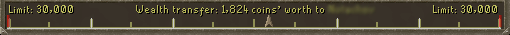
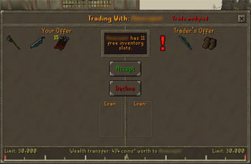

")
Controls - Trading
Introduction
Trading items with other players is an important part of the RuneScape experience.
Many items cannot be purchased in shops and can only be obtained by finding them, making them yourself, or by purchasing them from other players.
How to start Trading
An effective means of buying and selling items and services is to use the Grand Exchange. You can trade with players on any world, without needing to be present while the Grand Exchange clerks find someone willing to buy or sell within the price range you specify. It's an incredibly convenient system that you can even check up on from any bank in RuneScape!
Alternatively, for a more personal touch, you can use our Marketplace Forums. You can post a message in the right section, stating what you want to buy or sell and how much you are willing to pay. If you cannot post a message, you can still read other players' messages. You can access our forums at the following Marketplace Forums link.
The 'Trade' button at the bottom of your game window controls whether players can send you trade requests. The options are On, Friends Only or Off.
Turn this to On if you are happy to receive trade requests from anyone or Friends Only to trade only with your friends.
If you choose to trade on a personal level, rather than using the Grand Exchange, you will first need to find a buyer (or seller). For instance, if you have mined some coal and you want to sell it, you could try standing in a busy area and saying "Coal for sale!"
Unbalanced Trade
Because all trades must be 'balanced', you may be unable to complete a trade unless the value of the items you are exchanging is approximately equal. The bar at the bottom of the trade window will show you how balanced the trade is. The closer the arrow is to either end of the bar, the greater the wealth one of you will earn from the trade.

You are able to earn or lose a limited amount of wealth from trading in a fifteen minute period. This starts at 5,000 coins' worth for all players. This can be raised if:
- You have completed a number of quests
- Both you and your trade partner have been on each other's friends' list for a month or more
Your trade limit can increase up to a maximum of 40,000 coins on free worlds or 240,000 coins on members' worlds. Please see the table below if you wish to find out your trade limit for any particular trade.
The amount you can earn or lose is recalculated every minute, whether you are logged into RuneScape or not, to ensure that you will always be able to trade up to your maximum value every fifteen minutes. Your trade partner's previous earnings or losses, as well as their trade margin from quest points, may reduce the amount you can trade with each other. The amount you can earn is connected to the amount you can lose, so you can complete a number of trades in quick succession.
For example, if Player A has a trade margin of 6,000 coins and earned 1,500 coins from a trade, they could then complete another trade that lost them 6,000 coins. If they did so, they might immediately trade again to gain 2,000 coins. In this example, Player A has gained 500 coins overall and can trade again to earn another 5,500 coins.
| Quest Points | Trade Limit (not on Friends List) |
Trade Limit (Friend for 1 month) |
Trade Limit (Friend for 2 months) |
Trade Limit (Friend for 3+ months) |
| 0-10 | 5,000 coins | 10,000 coins | 15,000 coins | 20,000 coins |
| 34 | 10,076 coins* | 20,152 coins* | 30,228 coins* | 40,304 coins* |
| 75 | 18,750 coins | 37,500 coins | 56,250 coins | 75,000 coins |
| 150 | 34,615 coins | 69,230 coins | 103,845 coins | 138,460 coins |
| 225 | 50,480 coins | 100,960 coins | 151,440 coins | 201,920 coins |
| 270 | 60,000 coins | 120,000 coins | 180,000 coins | 240,000 coins |
* Note for players on free worlds: Your ability to trade is capped at 34 Quest Points, up to a limit of 40,000 coins every 15 minutes (attainable if both you and your trade partner have been friends for three months). This means that, once you have reached 34 Quest Points, your ability to trade does not increase any further.
You will notice that this is a sliding scale, so your ability to trade increases with every quest point you earn between 10 and 270. You will be told what your trade margin is when a trade starts.
Note that staked duelling and the Rat Pits affect the amount that you can trade.
You can find out more about why we regulate trades in this way by reading the RuneScape vs Real-world Trading Development Diary.
The Trade Window
Once you have found someone to trade with, click on their character with the right mouse button, and select the 'Trade' option. The other player will be informed of your request. To accept your trade they may click on your character and also select the 'Trade' option.

To add an item to your offer click on it in your inventory box. If you wish to add multiple items (e.g. a stack of coins) right-click the object to see the 'Offer 5', 'Offer 10', 'Offer x' and 'Offer all' options. Select the 'offer x' option to manually enter the number you wish to offer. To remove an item from your offer, just click on it in the offer window and it will be removed. Note that if you remove an item, your trading partner will see a large red exclamation mark telling them that you have changed the trade.
Once you are happy with the proposed exchange, press the green 'Accept' button. If you aren't happy for any reason, press the red 'Decline' button to cancel the trade.
Once you have clicked 'Accept' you will have to wait for the other person to also accept the trade. If they remove anything from the trade, the slot that has changed will gain a flashing exclamation mark, as you can see in the image below to the left.
When the other person has accepted the trade - assuming all goes well and the item is returned - a final confirmation screen will appear (see image below to the right). This clearly lists everything which is being swapped and gives you one last chance to check you are getting the trade you expected. You should read this information carefully, and then, when you are sure you are happy with the trade, press the green 'Accept' button.
|

|

|
Remember that there is no way to reverse a trade if you later change your mind, so be careful! Giving items in return for information, or with the promise of getting them back is very risky: please remember that not all RuneScape players are honest, and you could end up losing your items for nothing if you do this! If you want to remove the chance of being scammed in this way, or want a simpler way to offload lots of loot, you may prefer to use the Grand Exchange.
Lending Items
Item Lending is a great way for you to help out your friends. You can lend out a wide range of handy items, including many of RuneScape's best weapons and armour.
Note that no item can be 'lost' by lending it out, since the owner of the item will always be able to retrieve it.
 To begin lending someone an item, you can right-click on the item while the trade interface is open and select 'Lend'. Click here to see a complete list of all of the items you can lend.
To begin lending someone an item, you can right-click on the item while the trade interface is open and select 'Lend'. Click here to see a complete list of all of the items you can lend.
When you offer to loan the item to your trading partner, you will see that item appear in the 'Loan' box. You can adjust how long the loan will last by right-clicking the duration in the interface and selecting to have it returned when one of you logs out, or for it to be returned after a set number of hours (up to 24).
- Until log-out
The item will remain with your friend until one of you logs out of the game or they claim it back using the Returned Items Box (see 'Collecting your item'). You will be informed if they log out and told that you can collect it by talking to a banker. If you log out, the item will be taken off them and left with a banker for you to collect it when you log back in. The borrower can also return an item by using it on the lender, which will put it into the owner's inventory.
- For 'x' hours
If you lend it to a friend for a number of hours, you will be unable to get the item back until that time has ended. You can change how long 'x' is, between 1 and 24 hours, by right-clicking the item and entering a number between 1 and 24. The borrower cannot return the item until the specified time has expired.

When you've chosen how long you want to lend it to your friend for, you can complete your trade as normal (note that loaning items has no affect on trade balance, as the item is not being permanently transferred).
Collecting your Item

Lendable Items
Other items will be added to this list in the future.Weapons
| Abyssal whip | |
| Ancient Staff | |
| Composite bows - willow, yew and magic | |
| Dark bow | |
| Dragon hatchet, battleaxe, claws, dagger (including poisoned versions), halberd, longsword, mace, scimitar, spear (including poisoned versions) and two-handed sword | |
| Godsword (all types) | |
| Granite maul | |
| Longbows - maple, yew and magic | |
| Rune hatchet, battleaxe, cane, claws, dagger (including poisoned versions), halberd, longsword, mace, pickaxe, scimitar, spear (including poisoned versions), sword, two-handed sword and warhammer | |
| Runite crossbow | |
| Saradomin sword | |
| Seercull | |
| Shortbows - maple, yew and magic | |
| Zamorakian spear |
Armour
| Amulet of fury | |
| Archer helm | |
| Archer ring | |
| Armadyl helmet, chestplate and plateskirt | |
| Bandos chestplate, boots and tasset | |
| Berserker helm | |
| Berserker ring | |
| Dragon boots, chainbody, full helm, medium helm, platebody, platelegs, plateskirt and square shield | |
| Dragonhide - green, blue, red and black dragonhide body, chaps or vambraces | |
| Farseer helm | |
| God armour - Guthix, Saradomin and Zamorak full helm, kiteshield, platebody, platelegs and plateskirt | |
| Granite body, helm, legs and shield | |
| Mage boots | |
| Mystic boots, gloves, hat, robe bottom, robe top (including dark and light variants) | |
| Obsidian cape | |
| Ranger boots | |
| Robin Hood hat | |
| Rockshell helm, platebody, legs, gloves and boots | |
| Rune (including trimmed, gold-trimmed and gilded where available) boots, chainbody, full helm, kiteshield, medium helm, platebody, platelegs, plateskirt, square shield | |
| Seers' ring | |
| Skeletal boots, bottom, gloves, helm and top | |
| Spined body, boots, chaps, gloves and helm | |
| Splitbark body, boots, gauntlets, helm and legs | |
| Third Age helmet, kiteshield, platebody and platelegs | |
| Third Age mage hat, amulet, robe top and robe | |
| Third Age ranger coif, top, legs and vambraces | |
| Warrior helm | |
| Warrior ring |
Other
| Animal mask (all types) | |
| Beret (all colours) | |
| Cavalier and mask | |
| Cavalier hat (all colours) | |
| Flared trousers | |
| Halloween mask (all colours) | |
| Headband (all colours) | |
| Highwayman mask | |
| Pantaloons | |
| Party hat (all colours) | |
| Powdered wig | |
| Santa hat | |
| Sleeping cap | |
| Top hat |
Item Lending FAQ
How many items can I lend or borrow at a time?You are able to lend one item and to borrow one item at a time. You could, therefore, lend an item to a friend while borrowing an item from someone else, or vice versa.
Where am I unable to take a borrowed item?
There are few places that you cannot borrow or lend an item:
- Duel Arena and Duel Tournaments
- Chamber of Koschei the Deathless, beneath Rellekka
- Barbarian Assault
- Tears of Guthix
- PvP and Bounty worlds
My friend says his item has been returned, but it's still in my inventory.
The timers we use in-game are accurate to the nearest minute. For this reason, you may find that items appear in two places at once before the timer runs out and all returns to normal.
My friend says the item I loaned him has gone, but I don't have it yet. Help!
As before, our timers are accurate to the nearest minute. You may find that an item disappears, before this timer runs out and all returns to normal.

More articles in
Controls
|
|
|
Further Help
If this article does not help you, you may find the following sections of the RuneScape site helpful:
|
|